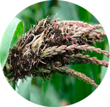
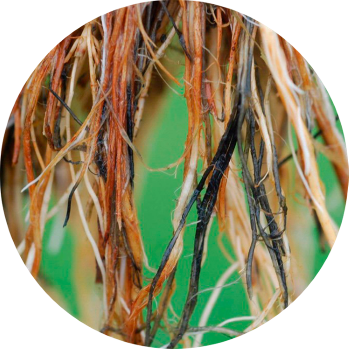

Introducción
Es importante conocer y aplicar cada procedimiento en el cultivo de maíz, teniendo en cuenta las condiciones o requerimientos del mercado, para tener una buena producción debemos tener una planeación, organización. ejecución de un plan de acción; y en el futuro poder ser muy eficaces en nuestra labor y aprovechar cada recurso y herramientas.
1. Realizar Análisis del suelo
El análisis de suelos es una herramientade fertilizantes químicos, materia orgánica y enmiendas.
Este será tan bueno como la calidad de las muestras tomadas, pues una muestra enviada al laboratorio de 500 a 1000 gramos representa millones de gramos de suelo.
1.1 Implementos requeridos


1.1. Realizar inspección visual del terreno.

Hacer recorrido en zigzag.
Tomar muestra de suelos cada 250 a 500 m2
Profundidad de la muestra de 20 cm en cultivos transitorios
Profundidad de la muestra de 15 cm para pastos.
Para cultivos anuales y perennes de raíz profunda, es conveniente hacer dos muestreos en el mismo sitio: uno de 0 a 20 cm y otro de 20 a 40 cm.
Cuanto mayor sea el número de muestras simples o sub-muestras colectadas para formar una muestra compuesta, más confiable será el muestreo.

1.2. Clasificación de las muestras.
Las muestras tomadas a la misma profundidad y en la misma unidad de suelos se mezclan dentro del balde, determinando o demarcando áreas de terreno similares u homogéneas por condiciones de topografía, color, drenaje, clase de vegetación, manejo de cultivos, etc.

Se extrae muestra de 1000 gr, se envía a laboratorio.
Se toma la muestra en forma de “V”, se toma muestra de las paredes del hoyo aproximadamente 3 cm.
Se debe eliminar piedras, raíces, maleza, pasto y basura.
1.3. Últimos pasos antes de enviar al laboratorio.
Después de obtener las 20 a 40 sub-muestras por hectárea:

Se debe mezclar bien el suelo colectado hasta homogenizarlo y de esta mezcla se obtendrá la muestra compuesta que es representativa, con un peso de 1000 gramos..
Deberá ser embolsada e identificada adecuadamente para enviarla al laboratorio. (¡Si el terreno muestreado es muy uniforme el número de sub-muestras a tomar podrá ser ostensiblemente menor!)
2. Preparar el terreno
Saber como preparar la tierra para la siembra de maíz es clave para uno de los cultivos más importantes en el mundo. Aunque el maíz puede adaptarse a distintos tipos de suelo hay que saber las condiciones en las que se encuentra y prepararlo para la siembra.
2.1. Tipos de preparación del terreno

2.1.1. Riego por surcos y alcorques
El número de pasadas de rastra depende del tipo de suelo y la solvencia económica del productor. Por lo general, en suelos francos es necesaria una arada y dos pases de rastra
2.1.2. Mínima Labranza (No convencional)
Este sistema se recomienda en aquellas regiones en donde la precipitación es baja o con mala distribución y en aquellos lugares donde no es posible utilizar maquinaria agrícola, ya sea porque son suelos con mucha pendiente o no existe maquinaria.
3. Instalar Sistema de Riego
Se debe diseñar un plan de riego adecuado que cubra la demanda de agua del maíz en diferentes etapas de desarrollo a lo largo de la temporada. El estrés hídrico continuo afectará al crecimiento, la solidez y la resistencia del cultivo a otros estreses abióticos y bióticos y, en definitiva, reducirá la producción del cultivo.
3.1. Plan de riego para el maíz.

La cantidad de agua suministrada a las plantas mediante el sistema de riego depende de lo siguiente:
Determinar tipo de suelo.
Condiciones ambientales y precipitaciones.
Variedad y expectativas y objetivos de producción.
Fecha de siembra.
3.2. Etapas de crecimiento y necesidades hídricas.
Dependiendo de la disponibilidad de agua de riego, el agricultor puede aplicar de 3 a 9 (u 11 para suelos sueltos) sesiones de riego durante la temporada de cultivo de maíz.
Como podemos notar este terreno tiene una problemática de escasez de agua, por eso se optó de sembrar en 2 etapas en el año, la primera se siembra en abril y la otra en octubre, donde su riego es estacionalidad porque son meses de invierno.
La primera sesión de riego debe realizarse antes o justo después de la siembra para mejorar el contenido de agua del suelo y ayudar a que las semillas germinen.
1 y 3 sesiones de riego más deben cubrir las necesidades de la planta al final del ciclo vegetativo y la floración, manteniendo la humedad del suelo hasta en un 60 %.
El suministro de agua se detiene después de la etapa de floración.
El exceso de riego (anegamiento) también puede causar problemas graves y afectar negativamente a la producción final de maíz. Especialmente durante la floración, puede reducir la producción de una planta en más del 50 % (4).
3.3. Métodos de riego.

3.3.1. Riego por surcos y alcorques.
Estos dos métodos se aplican en áreas con amplios recursos hídricos y de manera restrictiva solo en campos con una pendiente inferior al 0,5 %. En caso de que exista un gran peligro de degradación y erosión del suelo, se deben evitar ambos métodos.
3.3.2. Riego por aspersión.
El riego por aspersión en maíz asemeja las condiciones de aplicación a la misma lluvia natural. Un sistema de riego por aspersión en maíz presenta múltiples ventajas como: la limpieza mediante el riego de la superficie de las hojas mejorando la eficiencia de las plantas de maíz, el riego por aspersión en maíz permite tanto luchar contra las heladas como reducir la temperatura de las plantas de maíz, luchar contra las plagas simplemente con la aplicación del riego, e incluso añadiendo al agua para el riego mediante aspersión desde plaguicidas hasta abonos foliares.


3.3.3. Riego por goteo.
aporta un mayor ahorro de agua (25-55 %), aumenta la eficiencia del consumo de agua del maíz y, por último, aumenta la producción con este sistema (aumento de la producción del 10-50 %).
En comparación con los aspersores, el riego por goteo ofrece otra ventaja, y es que no humedece las hojas de las plantas, reduciendo así el riesgo de enfermedades fúngicas.
4. Realizar siembra
En general el maíz se siembra a profundidad entre 3 y 5 cm en surcos, y con distancia entre cada surco ajustado dependiendo del equipo cosechadora, preferencias regionales, y tipo y uso final del maíz.
4.1. Desarrollo del proceso de la siembra de maíz
Maíz para grano se cultiva normalmente con una distancia entre los
surcos de 90 cm y de planta a planta de 15 cm. Surcos más cerradas
deja que las plantas puedan aprovechar mejor la humedad, los nutrientes y la luz en una etapa más temprana por tener más espacio entre cada planta en el surco.
Al sembrar se agregan 3 granos de maíz, con una totalidad de 20 kg de
semilla para la hectárea.
Para producción de maíz para
grano en zonas más áridas, la
densidad pueda estar tan baja
como 25 000 plantas/ha, y en
zonas húmedas y tropicales la
densidad pueda estar por encima de 75 000 plantas/ha.
En regiones templadas, el maíz
forrajero se siembra normalmente con una densidad de
90,000 a 110,000 semillas/ha, y
las mejores plantaciones se obtienen a baja altura y en campos que dan al sol.
5. Realizar Fertilización
Se realiza siembra con una sembradora, la distancia que se realiza de surco a surco es de 90 cm, y de planta a planta 15 cm, al sembrar se agregan 3 granos de maíz, con una totalidad de 20 kg de semilla para la hectárea.
5.1. Planeación de la fertilización

5.1.1. Diagnostico de la fertilización.
Se efectúa analizando en forma integral los resultados provenientes del análisis de suelo en conjunto con las características de calidad de cada lote (rotación, cobertura de rastrojos, antecesores, historia agrícola, aspectos físicos, etc.) y el clima local.
Para la etapa de diagnóstico de fertilización es importante disponer de información histórica propia de cada lote (rindes, resultados de análisis de suelos históricos, tecnología aplicada, etc.) y de ensayos realizados en el propio campo o eventualmente en la zona.
5.1.2. Diseño del plan de fertilización.
Este plan consiste en la definición de las cantidades y tipos de fertilizantes a aplicar, así como del momento y tecnología de aplicación para satisfacer las necesidades del cultivo. En la determinación de estos aspectos intervienen diferentes factores: operativos (disponibilidad de máquinas, piso en los lotes, etc.); económicos (disponibilidad de fertilizantes en la zona, precio por unidad de nutriente del fertilizante, etc.) y por supuesto ambientales (distribución e intensidad de lluvias, temperatura, etc.).
5.1.3. Ejecución y monitoreo del plan de fertilización.
La ejecución es la implementación efectiva en la práctica del plan definido. Sin duda, a medida que se va ejecutando el plan pueden surgir cuestiones no previstas durante la planificación que requieren del ajuste según el nuevo escenario, por ejemplo, lluvias menores a las previstas o cambios de precios del grano que inciden en la dosis aplicadas.
5.1.4. Evaluación y análisis de los resultados del plan de fertilización

Una vez ejecutado el plan es necesario analizar y evaluar si la estrategia de fertilización utilizada funcionó y con que grado de eficiencia. Para poder hacerlo, es necesario contar con alguna parte del lote dejada como testigo con la practica tradicional o sin fertilización por ejemplo, y puede ser solamente una franja del ancho de una maquinada. En el mejor de los casos se pueden realizar algunas pruebas o ensayos más elaborados.
7. Realizar Control de Plagas y Enfermedades
Las zonas de cultivo que se requiera serán tratadas con el control de plaguicida Amina y fungicidas Acloro cada 30 días.
7.1. Etapas de desarrollo del maíz y ataque de plagas.

7.1.1. En la siembra y hasta poco después de la germinación
Estos dos métodos se aplican en áreas con amplios recursos hídricos y de manera restrictiva solo en campos con una pendiente inferior al 0,5 %. En caso de que exista un gran peligro de degradación y erosión del suelo, se deben evitar ambos métodos.
7.1.2. Cuando la planta de maíz tiene ya más de 8 hojas
Pueden empezar los ataques de los gusanos trazadores (como las larvas de primera generación de Sesamia nonagrioides), el gusano cogollero, la rosquilla verde, la rosquilla negra (gardama), el gusano soldado, la oruga militar, orugas filófagas, etc. También el maíz puede ser invadido por pulgones y por cicadéllidos. También ácaros, larvas de diabrótica, etc.
7.1.3. Cuando la planta de maíz tiene ya más de 12 hojas y el tallo muestra un crecimiento rápido
Estos dos métodos se aplican en áreas con amplios recursos hídricos y de manera restrictiva solo en campos con una pendiente inferior al 0,5 %. En caso de que exista un gran peligro de degradación y erosión del suelo, se deben evitar ambos métodos.

7.2. Tipos de Plagas y enfermedades.
7.2.1. Plagas más comunes.
a. Gusano cogollero:
El gusano cogollero (Helicoverpa armigera o Helicoverpa zea) es un insecto importante y común amenazante para el maíz, que puede ocasionar graves daños al maíz dulce. La larva puede dañar (debido a su alimentación) las hojas, borlas y especialmente las barbas y mazorcas, que son las partes de las que el insecto prefiere alimentarse.
b. Barrenador de tallo del maíz:
Los gusanos (larvas) tienen un color entre amarillo y marrón y una cabeza marrón y se alimentan de plantas jóvenes y pudren el cogollo y dañan las hojas. A medida que la larva madura, entra en los tallos. Debilitan y agujerean los tallos y atrofian las plantas (debido a la alteración del flujo de nutrientes y agua de la planta).


c. Gusanos cortadores:
Las larvas se alimentan de los tallos y las hojas y pueden cortar las plantas jóvenes por la base.
d. Áfidos pulgones de maíz y trips del maíz
Ambos insectos pueden disminuir la productividad de las plantas de maíz y causar daños graves, especialmente en plantas con estrés hídrico y en condiciones ambientales favorables. En infecciones graves, las plantas se vuelven cloróticas (manchas amarillentas en las hojas)

e. Gusanos blancos, tijeretas negras de campo y langostas migratorias
Cada uno de ellos pueden ocasionar problemas y pérdidas graves en el maíz (durante las fases de crecimiento de la planta).
7.2.2. Enfermedades fungicidas más comunes.
a. Mancha foliar gris:
La mancha foliar gris
(patógeno: Cercospora zeae-maydis) se
considera la principal amenaza para los
cultivos de maíz en la mayor parte del
mundo, causando incluso hasta un 100 %
de pérdidas de producción de granos.


b. Tizón de la hoja de maíz del norte y del sur
Son distintas enfermedades causadas
por diferentes hongos que tienen en común los síntomas de lesiones alargadas
de color verde grisáceo a marrón que
aparecen en las hojas y las importantes
pérdidas de producción que estos patógenos están causando en los campos
de maíz hoy en día.
c. Carbón de la espiga
Infecta las plántulas de maíz jóvenes durante y después de que broten de la tierra,
se propaga y crece sistémicamente dentro
de la planta sin mostrar ningún síntoma en
las fases tempranas.


d. La roya común y el mildiú velloso
Se propagan con bastante facilidad dentro
del cultivo, pero se pueden transferir fácilmente desde y hacia los maizales vecinos, alcanzando la gravedad de una epidemia.
e. Putrefacción de la raíz (Pythium y Rhizoctonia)
Ambos hongos infectan el sistema radicular
de las plantas de maíz en cualquier etapa de
desarrollo, lo que provoca la pudrición. Las
plantas infectadas pueden tener un crecimiento limitado (plantas enanas), ser poco
robustas, desarrollar clorosis, tener raíces
descoloridas y encamarse o morirse.

a. Mancha foliar gris:
La mancha foliar gris (patógeno: Cercospora zeae-maydis) se considera la principal amenaza para los cultivos de maíz en la mayor parte del mundo, causando incluso hasta un 100 % de pérdidas de producción de granos.
b. Tizón de la hoja de maíz del norte y del sur
Son distintas enfermedades causadas por diferentes hongos que tienen en común los síntomas de lesiones alargadas de color verde grisáceo a marrón que aparecen en las hojas y las importantes pérdidas de producción que estos patógenos están causando en los campos de maíz hoy en día.
c. Carbón de la espiga
Infecta las plántulas de maíz jóvenes durante y después de que broten de la tierra, se propaga y crece sistémicamente dentro de la planta sin mostrar ningún síntoma en las fases tempranas.
d. La roya común y el mildiú velloso
Se propagan con bastante facilidad dentro del cultivo, pero se pueden transferir fácilmente desde y hacia los maizales vecinos, alcanzando la gravedad de una epidemia.
e. Putrefacción de la raíz (Pythium y Rhizoctonia)
Ambos hongos infectan el sistema radicular de las plantas de maíz en cualquier etapa de desarrollo, lo que provoca la pudrición. Las plantas infectadas pueden tener un crecimiento limitado (plantas enanas), ser poco robustas, desarrollar clorosis, tener raíces descoloridas y encamarse o morirse.
7.2.3. Enfermedades víricas más comunes

Necrosis letal:
Ocurre en todas las etapas de crecimiento de las plantas y puede causar un crecimiento limitado de las plantas, clorosis de las hojas (desde la base de la hoja) que pudre el cogollo en las plantas más jóvenes, mazorcas malformadas, poco formadas o no formadas, inflorescencias masculinas pobres o incluso la muerte de las plantas. Los virus pueden ser transmitidos por las semillas de plantas infectadas y vectores como trips de maíz, áfidos y diabróticas.
8. Preparar Cosecha
Para realizar la cosecha se hará aproximadamente en 90 días, el cultivo vamos a utilizar las herramientas que serían saco 3 líneas, pita, canasto, guantes y usaremos un Exacto para quitarle la corteza de las capas que cubren el maíz para facilitar la recolección de la melena de maíz.
8.1. Recolección
8.1.1. Manual
Es la practica más común en los pequeños y medianos productores.
Dejar las plantas enteras en pie tal como se desarrollaron.
Cortar la parte superior de las plantas (espiga o flor masculina), para permitir una mayor exposición de las mazorcas al sol.
Doblado o quebrado. Este procedimiento consiste en doblar la parte superior de la planta o solamente la mazorca, para que la punta quede hacia abajo. Con esta práctica se pretende evitar que el agua de lluvia penetre al interior de la mazorca y disminuir el daño de los pájaros.
8.1.2. Semimecanizada (deschaladora o deshojedura)
Esta máquina que es arrastrada por un tractor, permite sacar las mazorcas de las plantas, quitarle las chalas (hojas, tusas, totomoxtle) y cargarlas en un carretón.
8.1.2. Mecanizada (Automotriz)
La cosechadora automotriz debe ser utilizada con un cabezal para maíz.
A medida que la cosechadora se mueve a través del campo, las puntas juntadoras del cabezal, van colocadas entre las hileras del maíz. Los rodillos despojadores sujetan los tailos del maíz y tiran de ellos rápidamente hacia abajo entre los rodillos.
Cuando una mazorca llega a la barra despojadora, no puedo pasar porque la abertura es angosta.
Los rodillos despojadores continúan tirando del tallo y arrancan la mazorca separándola del tallo.
9. Preparar Pos-Cosecha
La pos-cosecha se refiere a todas aquellas actividades dirigidas a conservar las características y la calidad de los granos. Ellas comprenden la prelimpieza y limpieza para el retiro de materiales extraños o impurezas; el secamiento que hay que hacerle al grano para llevarlo por debajo del 15% de humedad. También incluye el almacenamiento del grano.
9.1. Selección
Se debe revisar detenidamente las mazorcas y se deben eliminar las mazorcas y granos afectados por hongos e insectos. En producción de semilla se deben separar las mazorcas de color diferente al propio de la variedad, se descartan mazorcas pequeñas y aquellas con características diferentes a la gran mayoría, además, de apartar las mazorcas con mala cobertura.


9.2. Desgranado
Consiste en la separación de los granos de maíz de la mazorca. Es necesario secar las mazorcas hasta 15 - 18% pues estas condiciones minimizan el daño mecánico durante el desgrane. Una vez alcanzado este primer grado de secamiento se procede a desgranar y luego secar la semilla hasta 13 % de humedad. Exponer la semilla al sol en las horas de mayor calor produce un secamiento acelerado, lo que puede ocasionar daños.
9.3. Limpieza del grano
La limpieza es una acción que debe iniciarse en la finca y se completa en el centro de acopio como requisito previo para el almacenamiento del grano. Los materiales y cuerpos extraños diferentes al producto, pueden ser extraídos mecánicamente por medio de cribas, zarandas, mallas, corrientes de aire, etc. Esta labor debe realizarse preferiblemente antes del secamiento o almacenamiento del grano.


9.4. Secamiento
Como el grano generalmente no se recolecta con un grado de humedad que permita su almacenamiento, se hace necesario “secarlo” para mantener la calidad y características del grano y evitar su deterioro. Para adelantar esta labor adecuadamente se requiere conocer algunas propiedades fundamentales de los granos, con respecto a su secamiento.
9.5. Almacenamiento
Es importante recordar que para que los granos puedan almacenarse en forma segura y mantenga su calidad, estos deben estar limpios y secos. La disponibilidad de almacenamiento constituye un factor importante en el riesgo que afronta la agricultura. La función del almacenamiento es mantener el producto en depósito un tiempo determinado con el propósito de ajustar la oferta y los requerimientos de la demanda. Proporciona
9.5.1. Almacenamiento en sacos
Las bodegas deben contar con fácil acceso de camiones, piso fuerte, suave y en lo posible a un mismo nivel. Si está a nivel de tierra, el piso debe ser de concreto, protegido de la humedad que viene de abajo, cubierto de cascajo con cemento o brea.
9.5.2. Almacenamiento en silos
Se emplea en plantas de almacenamiento comercial o especializado, ya sea de tipo industrial, de importación o exportación. Cuentan con equipos para rápido tratamiento, conservación, secamiento, limpieza y fumigación, entre otras.